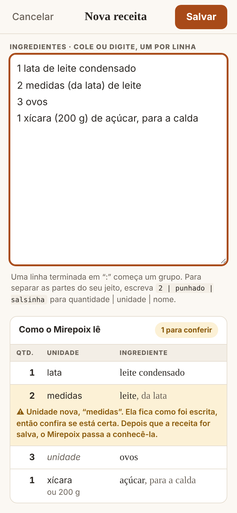
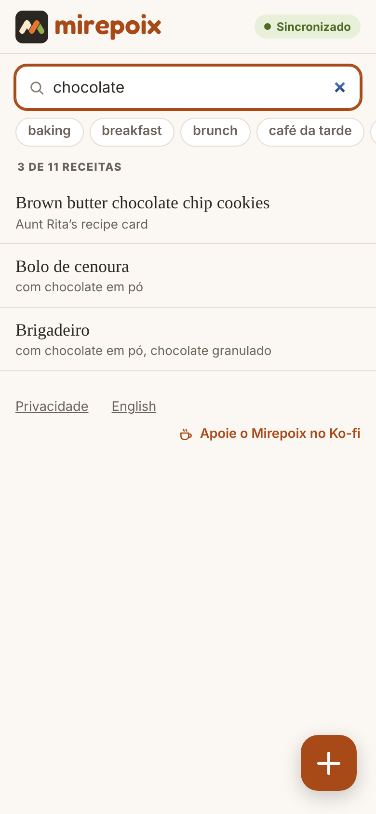
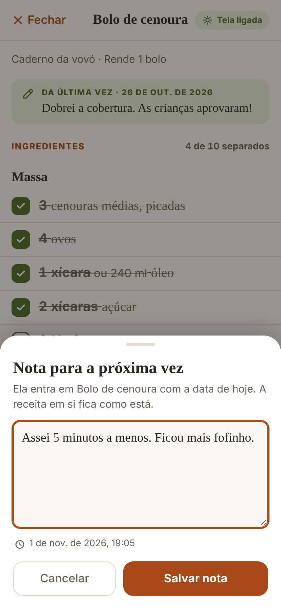
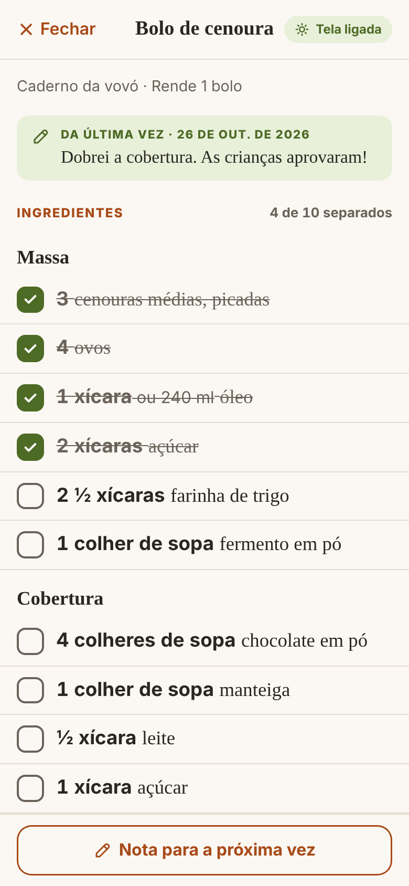
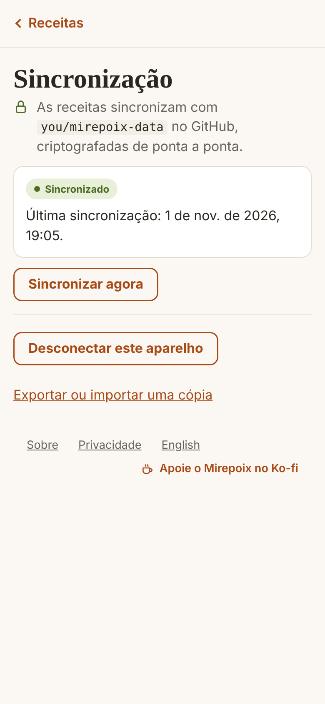
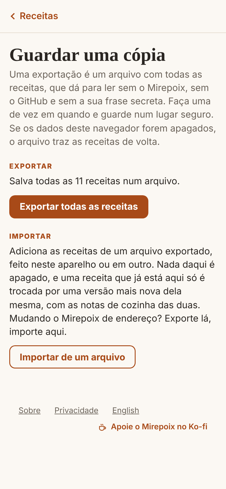

Um caderno de receitas particular
Do caderno
para a panela.
Receitas de livros, sites e cadernos, guardadas num só lugar tranquilo, em todos os aparelhos onde você cozinha.
Cole ou digite uma receita e o Mirepoix lê cada ingrediente como quantidade, unidade e nome. Leia sem mudar nada sem querer, cozinhe com a tela ligada e deixe notas para a próxima vez.
- Grátis
- Em qualquer navegador moderno
- A um toque, na tela de início
- Em todos os aparelhos, até offline
- Privado por definição
- Português e English
Anotar
Cole aqui,
O Mirepoix lê.
Copie uma receita de um site, digite de um livro, ou traga aos pedaços, do jeito que ela vier. Cada linha de ingrediente vira quantidade, unidade e nome enquanto você escreve, e você vê como ela foi lida antes de salvar.

-
Duas línguas num caderno só.
Cada receita é lida em português ou em inglês, então “2 xícaras de farinha” e “2 cups flour” convivem lado a lado.
-
Equivalências bem claras.
“2 xícaras (437 g) de manteiga” é uma quantidade só, escrita de dois jeitos, e aparece como “ou 437 g”. Com balança ou sem.
-
Nada de chute.
Uma unidade que o Mirepoix não conhece fica como você escreveu, marcada para você conferir. E você sempre pode separar as partes do seu jeito.
Achar e ler
Ache rápido,
Leia com calma.
Todas as suas receitas numa lista que busca títulos, ingredientes e etiquetas. Abra uma e só leia: nada muda a não ser que você queira.
O caderno inteiro num relance
Cada receita com a sua origem, e as suas etiquetas logo abaixo da busca.

O que dá para fazer com…?
Busque um ingrediente e veja todas as receitas que o usam, em qualquer das duas línguas.
Ler nunca edita
Nada de editar no meio do texto, nada de salvar sozinho. Mudar uma receita tem a sua própria tela, com Salvar e Cancelar.
Telas reais do aplicativo. Receitas de exemplo.
Na tela de início
A um toque,
Até offline.
O Mirepoix foi feito para morar na tela de início. Adicione uma vez, e ele abre como qualquer aplicativo: direto nas suas receitas, em tela cheia, com ou sem internet.
- iPhone e iPad No Safari, toque em Compartilhar e depois em Adicionar à Tela de Início.
- Android No Chrome, abra o menu e escolha Instalar app ou Adicionar à tela inicial.
- Computador No Chrome ou no Edge, use o botão de instalar na barra de endereço. No Safari do Mac, escolha Arquivo e depois Adicionar ao Dock.
- Sem loja de aplicativos e nada para baixar
- As versões novas chegam sozinhas


Cozinhar
Mãos ocupadas,
Tela ligada.
Comece a cozinhar e a receita fica maior, a tela não apaga, e você vai marcando o que já fez.
- Marque enquanto cozinha Ingredientes e passos se marcam com um toque, e o passo da vez fica sempre à vista. As marcações valem só para esta vez e nunca são salvas.
- A tela não apaga Chega de cutucar a tela com o dedo sujo de farinha. Onde o aparelho permite, a tela fica ligada até você terminar.
- Uma nota para o seu eu do futuro As notas levam a data e ficam ao lado da receita, nunca dentro dela, e aparecem como “Da última vez” quando você volta.
Todos os aparelhos
Um caderno só,
Vários aparelhos.
Celular na cozinha, notebook na mesa, tablet na casa da sua mãe. Conecte uma vez, e as mesmas receitas estão em todos eles.
- Criptografadas antes de sair As receitas são trancadas no seu aparelho com AES-256 e uma frase secreta que só você sabe. O GitHub guarda arquivos embaralhados; até os títulos ficam em segredo.
- Seu, não nosso As receitas viajam por um repositório privado do GitHub que é seu. Sem servidor do Mirepoix, sem assinatura, e cada mudança fica no histórico.
- Nada se perde Editou a mesma receita em dois aparelhos? As duas versões ficam, lado a lado. E as notas de cozinha de todos os aparelhos simplesmente se somam.
Sincronizar é opcional. A configuração leva alguns minutos, uma vez só, e o Mirepoix explica cada passo.
- Seus aparelhos
- Criptografadas aqui
- Seu repositório privado


Uma cópia sua
Suas receitas,
Sua cópia.
Faça um arquivo com todas as receitas, quando quiser. Ele abre sem o Mirepoix, sem o GitHub e sem a sua frase secreta.
Guarde no seu drive ou no seu e-mail. Importe em qualquer aparelho para trazer tudo de volta, com as notas de cozinha.
- JSON Dá para ler em qualquer lugar
- Offline Sem precisar de internet
- Sem anúncios Nem agora, nem depois
Melhor a cada versão
Passos pequenos,
melhorando aos poucos.
O Mirepoix cresce uma versão por vez, e cada uma funciona por conta própria. Veja onde ele está, e para onde vai.
-
Já tem
Caderno de receitas
Colar ou digitar, ler, buscar, exportar e importar. Em português e em inglês.
-
Já tem
Todos os aparelhos
As mesmas receitas em todo lugar, criptografadas de ponta a ponta pelo seu próprio repositório.
-
Já tem
Modo cozinha
Letra grande, tela ligada, marcações, notas para a próxima vez e etiquetas.
-
Próxima
Colar esperto
Cole uma receita inteira de uma vez, e o Mirepoix acha as seções.
-
Depois
Suas medidas
Mais jeitos de escrever equivalências, e unidades suas, como “copo americano”.
À mesa
Perguntas justas.
Respostas diretas.
O que as pessoas perguntam antes de colar a primeira receita.
-
O Mirepoix é grátis?
É. Não tem conta, nem anúncios, nem assinatura. Se quiser ajudar o Mirepoix a crescer, você pode apoiar o Mirepoix no Ko-fi.
-
Preciso instalar alguma coisa?
Não. O Mirepoix funciona em qualquer navegador moderno, no celular, no tablet e no computador. Para deixá-lo a um toque, adicione à tela de início: no iPhone e no iPad, toque em Compartilhar e depois em Adicionar à Tela de Início; no Chrome ou no Edge, use o botão de instalar na barra de endereço. Aí ele abre como um aplicativo, e funciona offline.
-
Onde ficam as minhas receitas?
No seu aparelho, no armazenamento do navegador. Se você ligar a sincronização, uma cópia criptografada vai também para um repositório privado seu no GitHub. O servidor de onde o Mirepoix vem nunca as vê.
-
Preciso de uma conta no GitHub?
Só para sincronizar entre aparelhos. Num aparelho só, o Mirepoix não precisa de mais nada. Configurar a sincronização leva alguns minutos, uma vez só: um repositório privado e um token para cada aparelho. O aplicativo explica cada passo.
-
A família pode dividir o mesmo caderno?
Pode. Todo mundo que se conecta ao mesmo repositório, com a mesma frase secreta, divide as mesmas receitas, e as que cada um já tinha se juntam a elas. Cada aparelho tem o seu próprio token, então um celular perdido pode ser desligado sozinho.
-
E se eu esquecer a frase secreta?
Ninguém consegue recuperá-la, e a ideia é essa: ninguém mais a tem. Os aparelhos já conectados continuam funcionando, e uma exportação faz uma cópia legível de todas as receitas a qualquer momento.
-
Em que línguas ele fala?
As telas estão em português do Brasil e em inglês. Cada receita tem a sua própria língua para ler os ingredientes, então “2 xícaras de farinha” e “2 cups flour” funcionam, no mesmo caderno.
Grátis, no seu navegador
Sua primeira receita
é só colar.
Nada para instalar, nada para cadastrar. Abra o Mirepoix e cole.